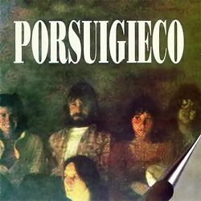
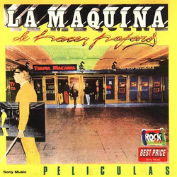
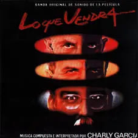
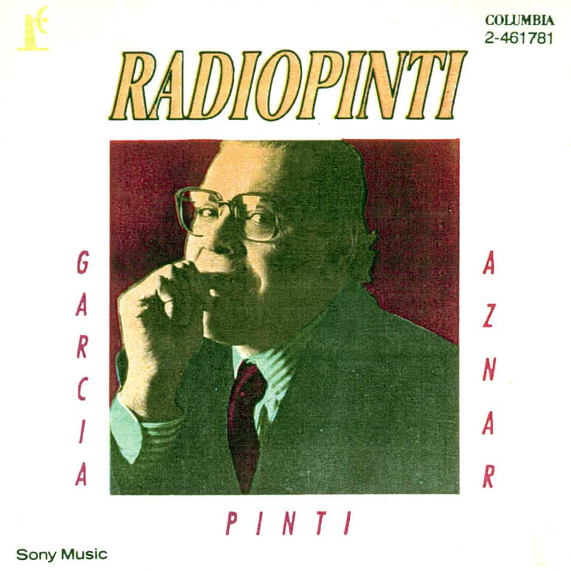
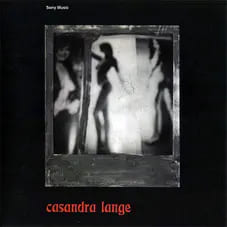

PORSUIGIECO
-
PORSUIGIECO (1976) Álbum de estudio homónimo.
LA MÁQUINA DE HACER PAJAROS
-
LA MÁQUINA DE HACER PAJAROS (1976) Álbum de estudio homónimo.

-
PELICULAS (1977) Segundo álbum de estudio.
DISCOS EXTRAS
-
LO QUE VENDRÁ (Soundtrack) (1988)
-
RADIO PINTI (con Pedro Aznar y Pinti) (1991)
-
ESTABA EN LLAMAS CUANDO ME ACOSTÉ (Cassandra Lange) (1995)